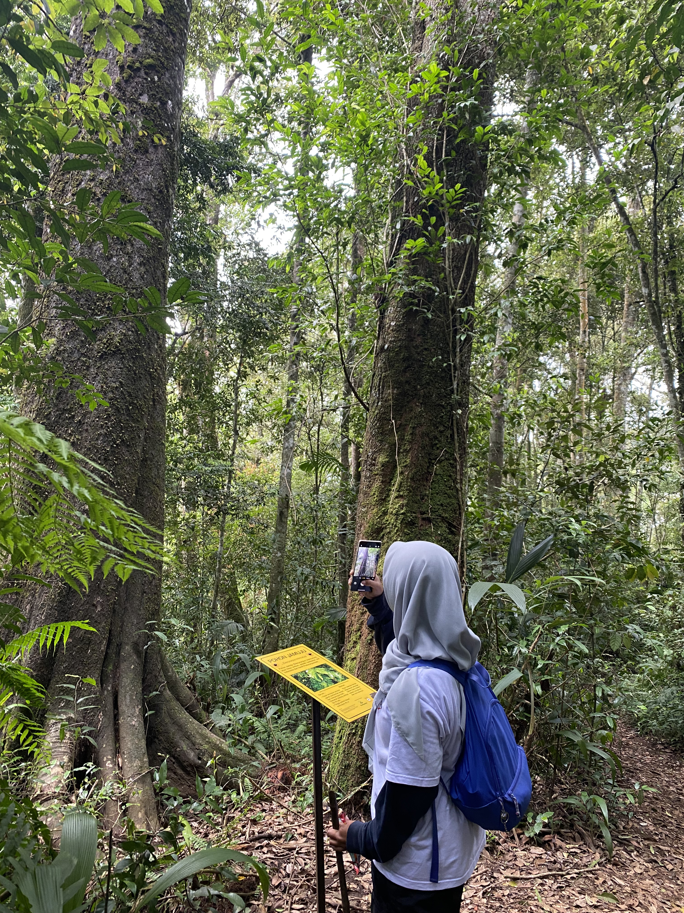

Lulusan Teknik Informatika yang lagi suka eksplorasi hal apapun. Saya memiliki pengalaman di bidang administrasi keuangan, pengelolaan dokumen, dan pengolahan data dengan teknologi yang ada, mulai dari Ms. Office, Python, dan lainnya.

Saya lulusan Teknik Informatika yang tertarik mempelajari dunia analisis data dan bisnis.
Memiliki pengalaman kerja bagian administrasi keuangan, selama berkuliah terjun dalam dunia organisasi untuk mencari relasi lintas jurusan dan fakultas, mengembangkan skill komunikasi dengan baik dengan ikut kepanitiaan yang berkoordinasi dengan orang lain dari berbagai latar belakang.
Saya ingin terus mengembangkan kemampuan tersebut melalui pengalaman profesional dan kesempatan belajar hal baru.
Universitas Mandiri 2022 - 2026
Tugas Akhir Deteksi Ujaran Kebencian Bahasa Indonesia
Pengolahan data, operasional bisnis, pengembangan manajemen
Tanggung Jawab:
Pengalaman ini mengajarkan saya untuk menjaga kerapian pencatatan, memperhatikan kelengkapan dokumen, dan menjalankan pekerjaan administrasi secara konsisten.
Tanggung Jawab:
Pengalaman ini menjadi kesempatan bagi saya untuk menerapkan pengetahuan teknologi sekaligus memahami pentingnya pengelolaan data yang rapi dan akurat.
Tanggung Jawab:
Tanggung Jawab:
Tanggung Jawab:
Excel, Word, PowerPoint (Mahir)
Python (Dasar), HTML, CSS
MySQL
GitHub, Canva